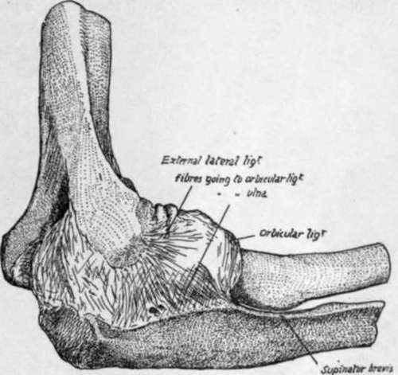
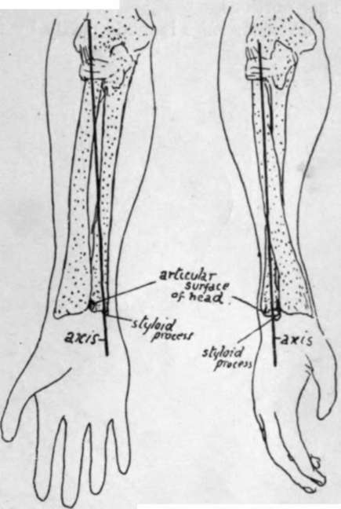
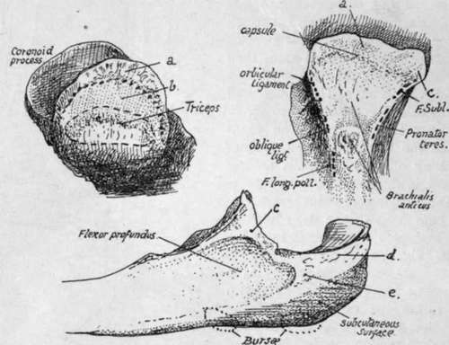
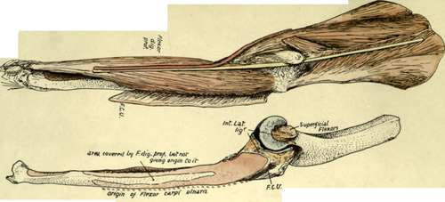
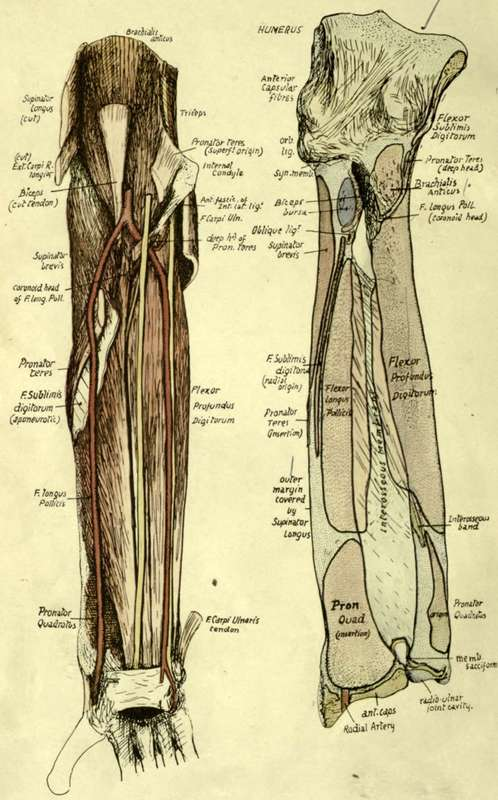

Ulna
Description
This section is from the book "The Anatomy Of The Human Skeleton", by J. Ernest Frazer. Also available from Amazon: The anatomy of the human skeleton.
Ulna
Observe the groove that crosses the floor of the great sigmoid notch, separating the olecranon and coronoid : the articular cartilage is also interrupted here by a hne of fibrous tissue. At each end of the groove is a notch in the margin, bridged on the inner side by the transverse fibres of the lateral ligament, but covered in externally by the outer ligament, which may, however, show a slight deficiency here (Fig. 72) for vessels and fatty tissue.
Fig. 72.-Capsule of elbow-joint seen from the outer side.
The smooth central ridge that runs down the sigmoid notch corresponds with the hollow of the trochlea, and, in further correspondence, we find that the outer moiety of the notch thus divided is greater on the olecranon and smaller on the coronoid : compare with a humerus.
Olecranon
Upper surface (Fig. 75) from its margin backwards presents synovial, ligamentous, bursal, and tendinous areas. Its posterior surface has a broad, triangular subcutaneous area, in relation with which are a couple of small subcutaneous bursae. Its inner side has rough markings for the internal lateral ligament and, behind and below these, the attachment of the fibrous arch that carries the origin of Flexor carpi ulnaris from the inner condyle to reach the inner margin of the subcutaneous area, and thus to pass to the subcutaneous border. Externally is a definite ridge for the external lateral hgament, and behind this a slightly hollowed surface for the upper part of the Anconeus insertion.
Coronoid
Cartilage covering upper surface is continuous with that in lesser sigmoid notch. Front surface (Fig. 75) is an elongated triangular area, with a rough tuberosity for tendon of Brachiahs anticus, above this an occasional bursal area, then marking for anterior capsular fibres, then a marginal synovial area. The inner and outer margins afford attachments to structures as shown in Fig. 75. The ulnar artery crosses the lower part of the inner margin, running off the Brachiahs anticus in a downward, inward, and backward direction on to the Flexor profundus ; it therefore passes here deep to the deep head of Pronator teres, which separates it from the median nerve (Figs. 76 and 77).
Below the lesser sigmoid cavity is a triangular hollow area : articulate the two bones and rotate the radius, and it becomes clear that the tubercle of this bone with its attached tendon requires the room afforded by this hollow to enable it to rotate. There is no space here for the attachment of muscles, so the ulnar origin of Supinator brevis is by thin aponeurosis from the back margin only of this area : a few muscle fibres may arise, however, just in front of this.
The head has really two articular surfaces which are continuous, a lower one for the triangular fibro-cartilage, and a circumferential one for the radius : owing to the extent of movement of the radius, this last surface is on two aspects of the head. When the hand is pronated, the postero-lateral articular surface on the ulna causes the prominence visible on the inner part of the back of the wrist (Fig. 74).
The capsular fibres are lax and make little marking on the bone. The fibro-cartilage is fastened by fibrous bands to the depression on the outer side of the base of the styloid process : external to this the head of the bone is articular. The styloid process has the internal lateral hgament of the wrist attached to it : as this is almost in the line of the axis of rotation, the ligament does not interfere with pronation and supination.
In mid-faetal life the styloid process articulates with the cuneiform bone in the carpus, but this connection has become ligamentous at birth.
Fig. 74.-The axis round which the radius turns is seen to pass through the head of that bone above, and through the head of the ulna below; these two points are the centres of the circles of which the circumferences of the heads are segments. Thus the radius rotates in the small sigmoid cavity of ulna above but moves round that bone below. Observe that in pronation the part of the head of the ulna which projects behind is covered by the radius in supination.
The remaining relations of the bone are shown in the figures, and a few short remarks may be made on these (Figs. 76, 77, and 79).
F. Profundus Dig.-Arises by muscle fibre, therefore a smooth area on bone ; arises higher on inner side, extending as far as the hollow smooth surface goes, up to side of olecranon bordering on internal lateral hgament: thus the ulnar nerve can pass directly from the ligament on to the muscle. A part of the inner surface of the shaft is free from muscular origin, between the attachments of the httle finger and ring finger portions.
Pronator ridge is made partly by fibres of the interosseous membrane extending on to the front of the bone, and partly by aponeurotic fibres on the surface of the muscle.
Pronator Quadratus
Observe the limited area of origin, and that the inner half of the muscle is covered by the broad tendon of Flexor profundus, while the outer portion is exposed in part by the narrower tendon of Flexor longus pollicis : this explains why the radial artery hes in one part of its course on the muscle, whereas the ulnar artery does not do so.
The extensor surface is subdivided by a " vertical ridge " into an area between the ridge and the interosseous border for deep muscles and a smooth strip between the ridge and the subcutaneous border which is for the play of Extensor carpi ulnaris, not affording origin to it. The vertical ridge, traced up, leads to the back of the Supinator brevis origin and outer border of olecranon.
Fig. 75.-1, Upper aspect of olecranon : a, surface covered by synovial reflection ; b, area for bursa deep to Triceps : the dotted line in front of b marks the capsular attachment. The bursal area is frequently much smaller or absent, with consequent approximation of Triceps and capsular markings. 2, Front surface of coronoid, showing the positions of attachments on its margins and surface. Internal lateral lig. is attached to the tubercle c, and F. sublimis reaches the bone along this band (see Fig. 77). Synovial membrane covers the surface a. 3, Inner side of upper end of ulna. The origin of F. profundus reaches the base of olecranon, c, tubercle on coronoid for ligament and F. sublimis ; d, posterior fibres of int. lat. lig. ; e, F. carpi ulnaris (see Fig. 76).
Fig. 76.-Shows the attachments on the inner side of the ulna. F.C.U. is the line of origin of Flexor carpi ulnaris from the olecranon, which it reaches from the internal condyle by means of a fibrous arch thrown over the ulnar nerve ; from the olecranon its origin extends down the subcutaneous border as shown by the dotted line, immediately deep to this muscle, the Flexor profundis arises from the inner side of the shaft and base of olecranon. The various structures are shown in position in the upper figure, the Flexor carpi ulnaris being turned back and separated from the condyle to expose the nerve lying on F. profundis. The nerve is lying in the groove between the anterior and posterior fibres of the lateral ligament and runs straight from there to the front of the forearm and hand ; this is possible because of the position of the ulna, which carries the articular surface for the humerus on its front aspect and is also curved backwards in its shaft, so that it lies behind the plane of the internal condyle and the nerve passing behind the condyle. The ulnar artery, as a result of the direction of the Brachiahs anticus passing to its insertion on the bone, runs off the muscle with a backward direction and thus comes into relation with the nerve in the upper third of the forearm. Compare with Fig. 77.
Fig 77.-The attachment of structures on the anterior surfaces of the right ulna and radius, with a dissection showing them in position.
The ridge is made by a thin aponeurotic fascia which covers the deep muscles and is continued on to the surface of Supinator brevis above : the origins of the deep muscles are mapped out by their aponeurotic fibres.
Extensor Carpi Ulnaris
Origin is prolonged from the external condyle and capsule to the subcutaneous border by an aponeurotic sheet which is attached to the line (Fig. 79) below the insertion of Anconeus, and is often described as an " intermuscular septum " on this aspect of the Anconeus. The origin is from the middle third of the subcutaneous border by aponeurosis, and thus the muscle comes to he on and play over the smooth area on the extensor surface : the continuation of this surface downwards leads to the groove for the tendon by the styloid process, where there is a synovial sheath.
Subcutaneous Border
This only extends to the lower fourth of the shaft : below this it cannot be found. The explanation is that it is made by the attachment of the deep fascia, rendered aponeurotic internally by the fusion with the aponeurosis of origin of F. carpi ulnaris, and externally with that of Ext. carpi ulnaris : between these two aponeuroses the ridge is subcutaneous. At the lower end, however, the deep fascia plays over the bone without firm attachment, as this would interfere with the radio-ulnar movements to some extent.
Fig. 76 shows how the position and shape of the ulna are such as to allow the ulnar nerve to come at once into a plane in front of the bone without turning forward : articulate the arm and forearm and extend the latter, and it can be seen at once that the internal condyle is in front of the plane of the ulna, so that the nerve can run straight down to its position on the anterior annular hgament. At the same time the ulnar artery, in coming inwards and downwards off the Brachiahs anticus, must have a backward inchnation, and this brings it into relation with the nerve after a very short course.
The female bone is smaller and lighter, with less marked muscular ridges : the head of the bone is more globular and knob-like in the female than in the male.
The whole length of the bone can be felt by the finger from the olecranon, along the subcutaneous border, to the styloid process. Observe the relation of the olecranon to the condyles of the humerus (q.v.) when the elbow is straight and bent, and notice that its distance from the inner condyle increases as flexion progresses. The styloid process is found on the back of the wrist when the forearm is supinated, but, on pronation, the rounded mass seen and felt here is the articular head itself, uncovered by the forward and inward movement of the radius, and the styloid process appears now to be on the inner and posterior aspect of the wrist : the apparent change is really due, of course, to the swinging round of the hand with the radius.
Continue to: